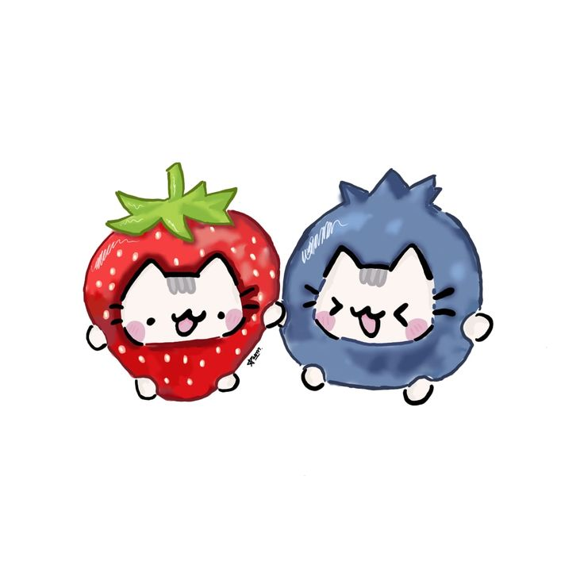

¿Qué es el Día del Amor y la Amistad?
El Día del Amor y la Amistad, también conocido como San Valentín, es una celebración anual que se lleva a cabo el 14 de febrero. Es un día dedicado a expresar el amor y la amistad hacia las personas que nos importan, ya sea a través de regalos, tarjetas, flores o gestos especiales. Esta festividad tiene sus raíces en la antigua Roma y ha evolucionado a lo largo de los siglos para convertirse en un ocasión popular en todo el mundo para celebrar las relaciones afectivas.
Encuesta: ¿Cómo celebras el 14 de febrero?
Imagen temá´tica
Playlist para el 14 de febrero
Escucha mi playlist especial aqui: Ir a playlist